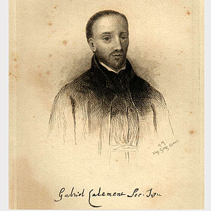

Sjevernoamerički mučenici (8 svetaca)
Svećenik · Misionar · Mučenik
Sv. Gabrijel Lalemant
1610. – 1649.
Za odlazak u kanadske misije pripremao se godinama, a među Wendatima djelovao tek nekoliko mjeseci. Kada je rat zahvatio njihovo naselje, ostao je uz zajednicu s Ivanom de Brébeufom.

Izvor slike
- Spomendan
- 26. rujna
- Zaštitništvo
- Nije navedeno u izvoru
- Životni vijek
- 1610. – 1649.
- Djelovanje
- Misije i evangelizacija · Obrazovanje i poučavanje vjere · Mučeništvo
- Razdoblje
- 17. stoljeće
- Slavi se
- 26. rujna
Životopis
Sveti Gabrijel Lalemant bio je francuski isusovac, svećenik i misionar koji je život završio među Wendatima, u starijim europskim izvorima nazvanima Huronima, u današnjoj Kanadi. Za odlazak u misije pripremao se godinama, a među ljudima kojima je najviše želio služiti djelovao je tek nekoliko mjeseci. Kada je rat zahvatio njihova naselja, ostao je uz njih zajedno s isusovcem Ivanom de Brébeufom. Obojica su zarobljena i ubijena u ožujku 1649. Crkva ga časti među osmoricom kanadskih mučenika, svjedoka vjere čiji je život bio povezan s početcima katoličkih misija u Novoj Francuskoj.
Gabrijel je rođen 3. listopada 1610. u Parizu, u obitelji odvjetnika. Bio je treće od šestero djece. Redovnički poziv bio je snažno prisutan u njegovoj obitelji: petero djece izabralo je redovnički život, a dvojica njegovih stričeva bila su isusovci u kanadskim misijama. Charles Lalemant pripadao je prvim isusovačkim misionarima u Kanadi, dok je Jérôme Lalemant također imao važne odgovornosti u tamošnjem crkvenom životu. Gabrijelov je obiteljski krug tako bio povezan s Družbom Isusovom i njezinim poslanjem u dalekim krajevima.
U Družbu Isusovu stupio je 1630., u dvadesetoj godini života. Dvije godine poslije posebnim se zavjetom obvezao posvetiti misijama. Bila je to odluka koja je obuhvaćala spremnost na služenje i žrtvu. Ipak, između te odluke i odlaska preko oceana proteklo je još mnogo godina. Njegov redovnički poziv u tom se razdoblju ostvarivao kroz odgoj, studij, poučavanje i poslušnost poglavarima. Želja za misijama pratila ga je i dok je obavljao poslove koji su mu bili povjereni u Francuskoj.
Od 1632. do 1635. poučavao je na isusovačkom kolegiju u Moulinsu. Potom je studirao teologiju u Bourgesu, gdje je 1638. zaređen za svećenika. Uslijedile su nove nastavničke službe; predavao je i filozofiju, a njegovo je djelovanje bilo povezano s kolegijima u Moulinsu, La Flècheu i Bourgesu. Taj dio njegova života zauzima mnogo više vremena od njegova kasnijega djelovanja među Wendatima. Prije nego što je postao misionar, godinama je bio odgojitelj i učitelj. U redovničkom je životu povezivao vlastitu izobrazbu s radom za mlade koji su mu bili povjereni.
Njegovo je zdravlje bilo krhko. Poglavari su više puta odbili njegove molbe za odlazak u Novu Francusku, a njegovoj su tjelesnoj slabosti vjerojatno pridavali važnost pri toj odluci. Gabrijel je nastavio moliti za dopuštenje, ali je ostajao na službi koju mu je Družba povjeravala. U njegovu se putu zajedno vide ustrajnost osobne želje i prihvaćanje redovničke poslušnosti. Misijski zavjet nije ga izdvajao iz zajednice kojoj je pripadao; ostvarivao ga je unutar njezina razlučivanja i poslanja.
Naposljetku je dobio dopuštenje za odlazak. Iz francuske luke La Rochelle otplovio je 13. lipnja 1646. Putovanje preko Atlantika trajalo je više od tri mjeseca: u Québec je stigao 20. rujna. Došao je u Novu Francusku, kako se tada nazivala francuska kolonija u Sjevernoj Americi. Ondje je djelovao i njegov stric Jérôme. Prve dvije godine Gabrijelova boravka bile su vezane uz Québec, njegovu okolicu i Trois-Rivières. Put preko oceana time je bio završen, ali je počinjalo novo razdoblje priprave. Valjalo je upoznati jezik, običaje i život ljudi kojima je trebao naviještati kršćansku vjeru.
Osobito se posvetio učenju jezika Wendata. Suvremenici su zapazili njegovu marljivost u tom zahtjevnom poslu. Za misionara je učenje jezika bilo dio stvarnoga približavanja ljudima: njihove je riječi morao razumjeti prije nego što im je mogao jasno govoriti o vjeri. Njegova se dugogodišnja želja za služenjem tako potvrđivala u strpljivom učenju. Nakon godina poučavanja u Francuskoj ponovno je bio učenik, sada u novoj zemlji i među ljudima čiji se život razlikovao od onoga koji je dotad poznavao.
Potkraj ljeta ili početkom jeseni 1648. poslan je u zemlju Wendata, Wendake, gdje je radio uz Ivana de Brébeufa. Bio je to mnogo iskusniji misionar, dugo povezan s tamošnjim narodom i njegovim jezikom. Gabrijel se uključio u misiju čije je središte bilo Sainte-Marie. Još se nekoliko mjeseci posvećivao učenju jezika i upoznavanju novoga okruženja. Početkom 1649. s Brébeufom je odlazio u tjedne posjete obližnjim naseljima. Tako je neposredno sudjelovao u misijskom radu uz svećenika od kojega je mogao učiti.
U veljači 1649. preuzeo je službu u Saint-Louisu. Napokon je živio među onima kojima se zavjetovao posvetiti, ali njegovo je djelovanje ondje bilo vrlo kratko. Sainte-Marie je bilo središte iz kojega se polazilo prema drugim naseljima, a služba u Saint-Louisu povezala ga je s ljudima koji će uskoro biti izloženi napadu. Ratna opasnost koja je prijetila naseljima odredila je posljednje dane njegova života.
U ožujku 1649. ratnici konfederacije Haudenosaunee, poznate i kao Irokeška konfederacija, napali su naselja Wendata. Nakon napada na Saint-Ignace preživjeli su upozorili stanovnike Saint-Louisa. Branitelji su nastojali zadržati napadače kako bi ostali mogli pobjeći. Gabrijel Lalemant i Ivan de Brébeuf ostali su u naselju s ljudima kojima su služili. Njihova svećenička prisutnost u času opasnosti bila je završetak poslanja zbog kojega su došli u tu zemlju. Dana 16. ožujka obojica su zarobljena i odvedena u Saint-Ignace.
Ondje su podnijeli teško mučenje. Ivan de Brébeuf umro je 16. ožujka, a Gabrijel Lalemant 17. ožujka 1649. O njihovoj su smrti subraća doznala od odbjeglih zarobljenika, čije je vijesti u isusovačkom izvještaju zabilježio Paul Ragueneau. Gabrijelova smrt pripada povijesti ratovanja koje je pogodilo tamošnje narode i misije. U crkvenom sjećanju ostao je mučenik koji je do kraja bio vjeran Kristu i ljudima kojima je poslan.
Nakon povlačenja napadača tijela poginulih pronađena su i prenesena u Sainte-Marie. Ondje su misionari pokopani. Spomen na njih sačuvao se u Družbi Isusovoj i u Crkvi u Kanadi. Njihove se relikvije danas časte u Svetištu mučenika u Midlandu u Ontariju. Uz Gabrijela i Ivana de Brébeufa Crkva zajedno spominje i druge isusovce i njihove suradnike koji su u tim misijama položili život za vjeru.
Papa Pio XI. proglasio je kanadske mučenike blaženima 1925., a svetima 29. lipnja 1930. U kanadskom se kalendaru njihov zajednički spomendan slavi 26. rujna, dok se u Družbi Isusovoj i drugdje skupina spominje 19. listopada.
Gabrijelov život u toj skupini ima svoju posebnu crtu: dugogodišnja priprava završila je vrlo kratkim neposrednim služenjem među Wendatima. Njegovu vjernost čine i godine studija, poučavanja i čekanja, i posljednja odluka da ostane uz ugrožene ljude. Svjedočanstvo svetoga Gabrijela Lalemanta povezuje strpljivo prihvaćanje svakodnevnih dužnosti sa spremnošću da se za Krista i bližnjega daruje čitav život.
Pročitaj više na izvornoj stranici ↗